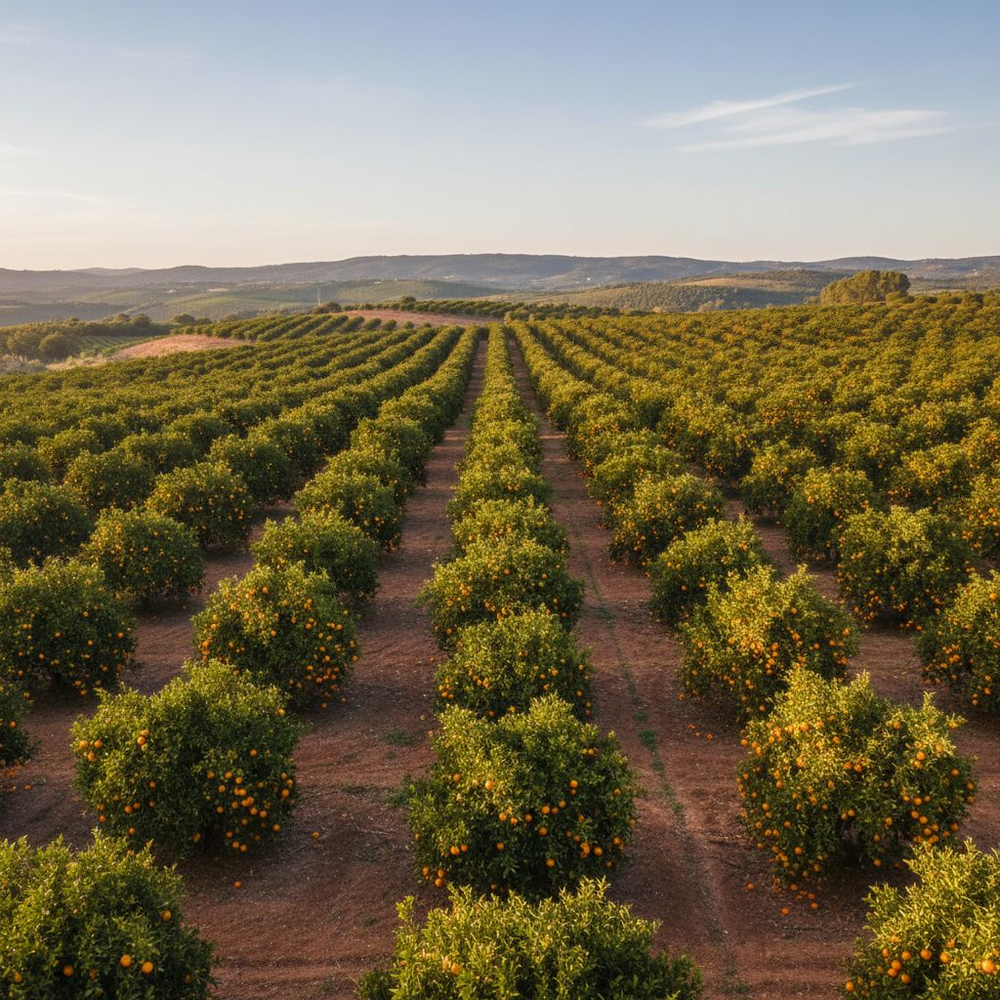

Wholesale oranges · Silves hills, AlgarveLaranjas por grosso · colinas de Silves, Algarve
Algarve oranges, by the crate, to your door.Laranjas do Algarve, à caixa, até à sua porta.
Wholesale oranges for shops and juice bars, picked in the hills above Silves, where the sun does most of the work and the farmer takes the credit. Choose your oranges, choose where they go, see the price, and send a (pretend) order request. Laranjas por grosso para lojas e bares de sumos, colhidas nas colinas acima de Silves, onde o sol faz quase todo o trabalho e o agricultor fica com os louros. Escolha as laranjas, escolha o destino, veja o preço e envie um pedido de encomenda (a fingir).
Start an orderComeçar uma encomenda See the orangesVer as laranjas
- 15 kgcratescaixas
- 4varieties this weekvariedades esta semana
- Tue · Friter · sexdelivery daysdias de entrega
Image generated with a Gemini model; not a real farm. All figures invented.Imagem gerada com um modelo Gemini; não é uma quinta real. Todos os números são inventados.
This week's orangesAs laranjas desta semana
Sold in 15 kg crates. Prices are per kilogram, before VAT, and invented.Vendidas em caixas de 15 kg. Os preços são por quilograma, sem IVA, e inventados.
Your order (simulation)A sua encomenda (simulação)
- OrangesLaranjas
- DeliveryEntrega
- PricePreço
- SendEnviar
What would happen nextO que aconteceria a seguir
In a real shop the farmer would read your request and confirm by reply. Here there is no farmer, no email and no server: the whole page runs in your browser and forgets everything when you close it. Numa loja a sério o agricultor leria o seu pedido e confirmaria por resposta. Aqui não há agricultor, nem email, nem servidor: a página corre toda no seu navegador e esquece tudo quando a fecha.